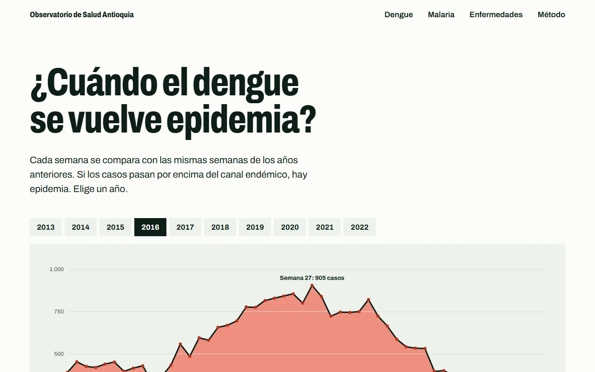

En vivo Proyecto personal · 2026
Observatorio de Salud Pública de Antioquia
Pipeline de datos, API y página pública sobre los casos notificados al SIVIGILA en Antioquia entre 2007 y 2022.
- Python
- pandas
- SQL
- MySQL
- FastAPI
- pytest
- Docker
- GitHub Actions
Casos por año en Antioquia, 2007–2022
Cargando datos del observatorio…
-
27.628
El dengue llega en olas: epidemias en 2010 (25.804 casos) y 2016 (27.628).
-
51 %
Medellín concentra el 51 % del dengue del departamento.
-
−90 %
La malaria vivax cayó casi 90 % entre 2010 y 2017: de 36.768 a 3.748 casos.

- Problema
- Los datos abiertos del SIVIGILA llegan como texto, con códigos de municipio incompletos y filas repetidas. Así no responden preguntas.
- Qué construí
- Un pipeline ETL en Python y pandas que descarga los datos de datos.gov.co, los limpia y valida, los carga en un modelo estrella en MySQL y los publica con una API de solo lectura en FastAPI y en la gráfica de esta página.
- Decisiones técnicas
-
- Códigos DIVIPOLA rellenados a 5 dígitos; los municipios desconocidos se conservan pero quedan fuera de los rankings.
- Análisis en SQL con CTE y funciones de ventana (LAG, ROW_NUMBER) para calcular el canal endémico.
- GitHub Actions corre las pruebas con pytest en cada push y actualiza los datos el día 1 de cada mes.
- Resultado
- 1.185.468 casos notificados, limpios y publicados en un observatorio que se actualiza solo.
- Mi rol
- Proyecto personal: lo hice todo, de la extracción de los datos a la página publicada.
Qué aprendí
- Los datos abiertos no responden preguntas tal como llegan: vienen como texto, con códigos de municipio incompletos y filas repetidas, y hay que limpiarlos y validarlos primero.
- Automatizar las pruebas y la actualización mensual con GitHub Actions mantiene el observatorio al día sin trabajo manual.